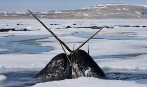

Narwhal
Quick Facts
Length: about 17 feet
Lifespan: about 50 years
Classification: Toothed
Distinguishing Feature(s): large tusk from a protruding canine tooth
Gestation period: 14 months
Scientific name: Monodon monoceros
Overview
Narwhals—affectionately known as the “unicorns of the sea”—are very distinctive with their long spiral tusks protruding from their faces. In actual fact, the ivory tusk is the upper left canine of the narwhal, which they use to hit and stun prey. They are beautiful, but you certainly wouldn’t want to get too close to those tusks!
It is predominately the males who have tusks—sometimes two, but sometimes none. Only about 15% of female narwhals have them. The tusks can grow as long as 10 feet and they have significant sensory capabilities, with as many as 10 million nerve endings inside. They spend their entire lives in the Arctic waters of Russia, Svalbard, Greenland, and Canada, usually spending up to five months of the year under sea ice around Baffin Bay-Davis Strait. They predominately feed on shrimp, squid, Arctic and polar cod, and Greenland halibut.